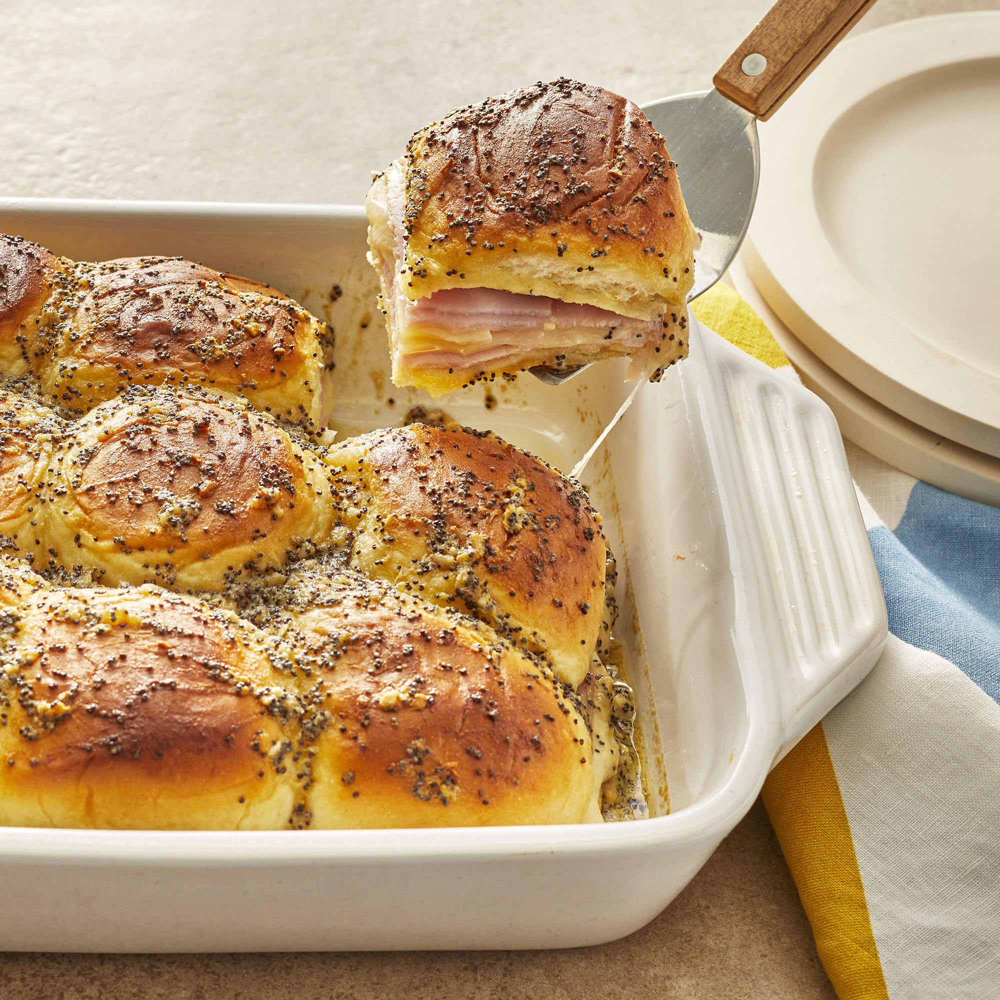

Baked Ham and Cheese Sliders

Description
Baked ham and cheese sliders are the perfect savory dish to start the day. Buttery rolls surrounding savory deli cuts, perfectly melted cheese, and snappy Dijon mustard are sure to get anyone up and moving. Plus, these tasty little morsels are perfect for feeding large groups, whether it be sleepovers, watch parties, family reunions, and everything in between. With this dish taking just over 35 minutes of prep and cook time, what are you waiting for?
Ingredients
- ¾ cup melted butter
- 1 ½ tablespoons Dijon mustard
- 1 ½ teaspoons Worcestershire sauce
- 1 ½ tablespoons poppy seeds
- 1 tablespoon dried minced onion
- 24 mini sandwich rolls
- 1 pound thinly sliced cooked deli ham
- 1 pound thinly sliced Swiss cheese
Steps
- Preheat over to 350 degrees F, or 175 degrees C.
- Grease a 9x13-inch baking dish.
- In a bowl, mix together butter, Dijon mustard, Worcestershire sauce, poppy seeds, and dried onion.
- Separate the tops from bottoms of the rolls, and place the bottom pieces into the prepared baking dish.
- Layer about half the ham onto the rolls.
- Arrange the Swiss cheese over the ham.
- Top with remaining ham slices in a layer.
- Place the tops of the rolls onto the sandwiches.
- Pour the mustard mixture evenly over the rolls.
- Bake in the preheated over until the rolls are lightly browned and the cheese has melted, about 20 minutes.
- Slice into individual rolls through the ham and cheese layers to serve.
Credits
Content from LisaT's recipe here.